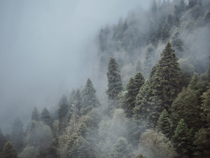
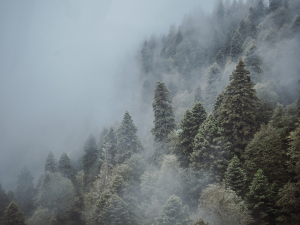
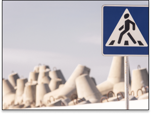
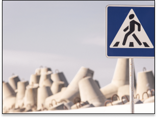
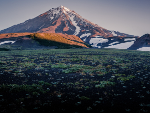
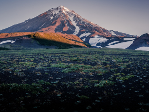

Путешествия по России
Настоящая страна не в выпусках новостей, а здесь.

Ваша полка - верхняя
Чего мы там не видели?
По опросам ВЦИОМ, 95% россиян мечтают куда-нибудь поехать, но только 36% планируют провести отпуск в родной стране. Мол, чего мы тут, дома, не видели? На самом деле, Россия — это целая вселенная с ласковым морем юга, густыми лесами Саян и суровыми льдами плато Путорана. А ещё увидеть все эти красоты можно без миллионов на счету, загранпаспорта и многочасовых перелетов. Как, например, Вера Башмакова — смелая молодая мама, которая взяла в охапку троих детей, усадила их в свою «Ладу» и проехала 20 тысяч километров по родной стране. Мы выбрали и описали некоторые интересные места, достойные вашего отпуска.
- Часовых поясов 11
- Объектов природного наследия ЮНЕСКО 12
- Объектов культурного наследия ЮНЕСКО 16
- Природных заповедников 105
- Аэропортов 241


 



 

 



Куршская коса
 URL park-kosa.ru
URL park-kosa.ru
Здесь, посреди лесов и песчаных дюн, вы сможете увидеть два водных горизонта — спокойного Куршского залива с одной стороны и подёрнутого рябью волн Балтийского моря с другой. Уникальная природная зона на краю российского анклава.
На этом Калининградская область не заканчивается. Для путешественника и исследователя там же по соседству — самая западная точка России, Балтийская коса, — и немецкое наследие россыпи небольших приморских городов. Атмосфера здешних мест исключает суету, окуная в спокойствие природы и запах стального, прохладного моря.